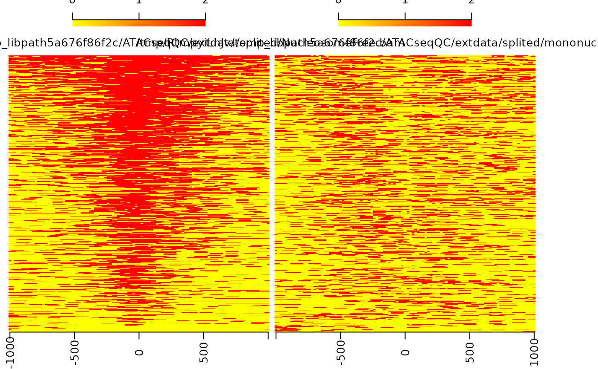
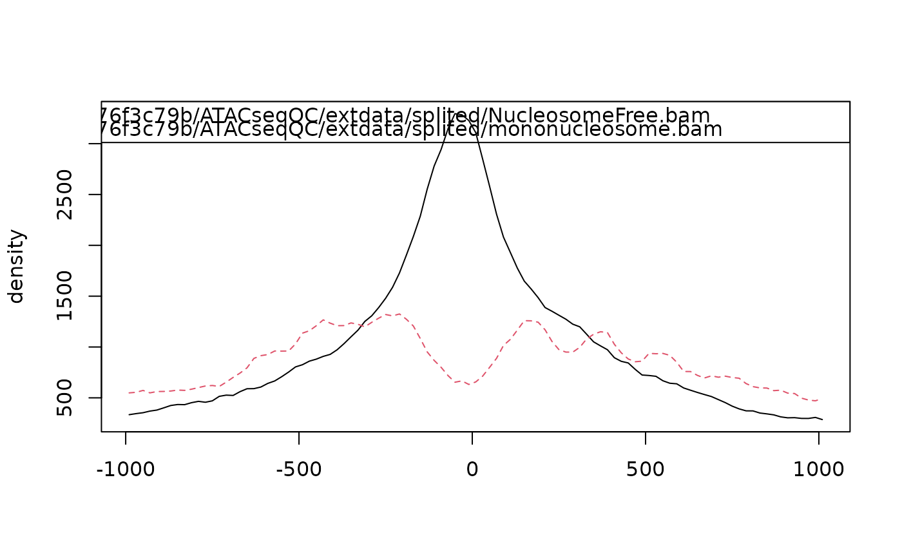

enrichedFragments.RdGet the enrichment signals for nucleosome-free fagments and nucleosomes.
enrichedFragments( bamfiles, index = bamfiles, gal, TSS, librarySize, upstream = 1010L, downstream = 1010L, n.tile = 101L, normal.method = "quantile", adjustFragmentLength = 80L, TSS.filter = 0.5, seqlev = paste0("chr", c(1:22, "X", "Y")) )
| bamfiles | A vector of characters indicates the file names of bams. |
|---|---|
| index | The names of the index file of the 'BAM' file being processed; This is given without the '.bai' extension. |
| gal | A GAlignmentsList object or a list of GAlignmentPairs. If bamfiles is missing, gal is required. |
| TSS | an object of GRanges indicates the transcript start sites. All the width of TSS should equal to 1. Otherwise, TSS will be reset to the center of input TSS. |
| librarySize | A vector of numeric indicates the library size. Output of estLibSize |
| upstream, downstream | numeric(1) or integer(1). Upstream and downstream size from each TSS. |
| n.tile | numeric(1) or integer(1). The number of tiles to generate for each element of TSS. |
| normal.method | character(1). Normalization methods, could be "none" or "quantile". See normalizeBetweenArrays. |
| adjustFragmentLength | numeric(1) or integer(1). The size of fragment to be adjusted to. Default is set to half of the nucleosome size (80) |
| TSS.filter | numeric(1). The filter for signal strength of each TSS. Default 0.5 indicates the average signal strength for the TSS from upstream to downstream bins should be greater than 0.5. |
| seqlev | A vector of character indicates the sequence names to be considered. |
A list of matrixes. In each matrix, each row record the signals for corresponding feature.
Jianhong Ou
bamfiles <- system.file("extdata", "splited", c("NucleosomeFree.bam", "mononucleosome.bam", "dinucleosome.bam", "trinucleosome.bam"), package="ATACseqQC") library(TxDb.Hsapiens.UCSC.hg19.knownGene) txs <- transcripts(TxDb.Hsapiens.UCSC.hg19.knownGene) TSS <- promoters(txs, upstream=0, downstream=1) library(ChIPpeakAnno) librarySize <- estLibSize(bamfiles) sigs <- enrichedFragments(bamfiles, TSS=TSS, librarySize=librarySize, seqlev="chr1", TSS.filter=0) sigs.log2 <- lapply(sigs, function(.ele) log2(.ele+1)) featureAlignedHeatmap(sigs.log2, reCenterPeaks(TSS, width=2020), zeroAt=.5, n.tile=101, upper.extreme=2)#> Warning: GRanges object contains 1 out-of-bound range located on sequence #> chrUn_gl000223. Note that ranges located on a sequence whose length is #> unknown (NA) or on a circular sequence are not considered out-of-bound #> (use seqlengths() and isCircular() to get the lengths and circularity #> flags of the underlying sequences). You can use trim() to trim these #> ranges. See ?`trim,GenomicRanges-method` for more information.#> Warning: GRanges object contains 1 out-of-bound range located on sequence #> chrUn_gl000223. Note that ranges located on a sequence whose length is #> unknown (NA) or on a circular sequence are not considered out-of-bound #> (use seqlengths() and isCircular() to get the lengths and circularity #> flags of the underlying sequences). You can use trim() to trim these #> ranges. See ?`trim,GenomicRanges-method` for more information.#> Warning: Some start position of the peaks are less than 1!#> Warning: Some end position of the peaks are out of bound!#> Warning: GRanges object contains 1 out-of-bound range located on sequence #> chrUn_gl000223. Note that ranges located on a sequence whose length is #> unknown (NA) or on a circular sequence are not considered out-of-bound #> (use seqlengths() and isCircular() to get the lengths and circularity #> flags of the underlying sequences). You can use trim() to trim these #> ranges. See ?`trim,GenomicRanges-method` for more information.#> Warning: GRanges object contains 1 out-of-bound range located on sequence #> chrUn_gl000223. Note that ranges located on a sequence whose length is #> unknown (NA) or on a circular sequence are not considered out-of-bound #> (use seqlengths() and isCircular() to get the lengths and circularity #> flags of the underlying sequences). You can use trim() to trim these #> ranges. See ?`trim,GenomicRanges-method` for more information.#> Warning: Some start position of the peaks are less than 1!#> Warning: Some end position of the peaks are out of bound!